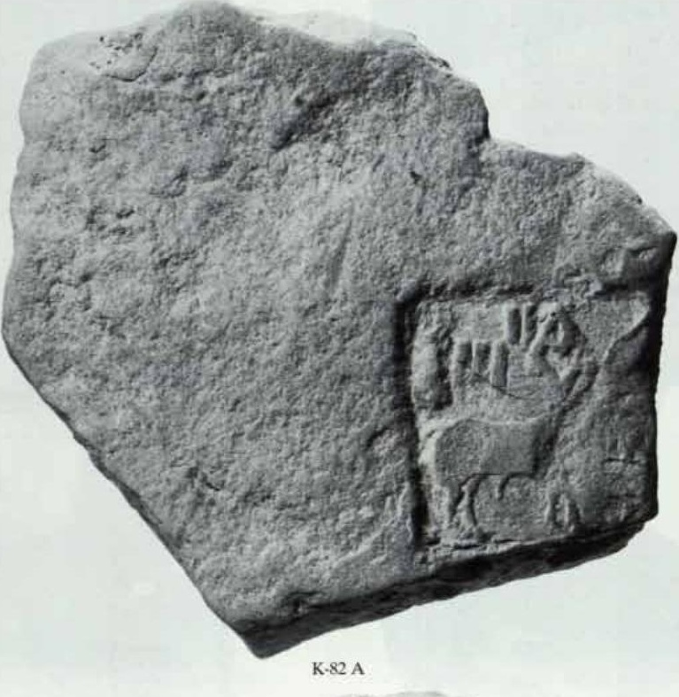
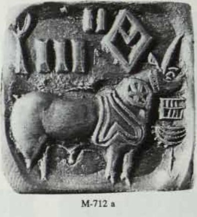
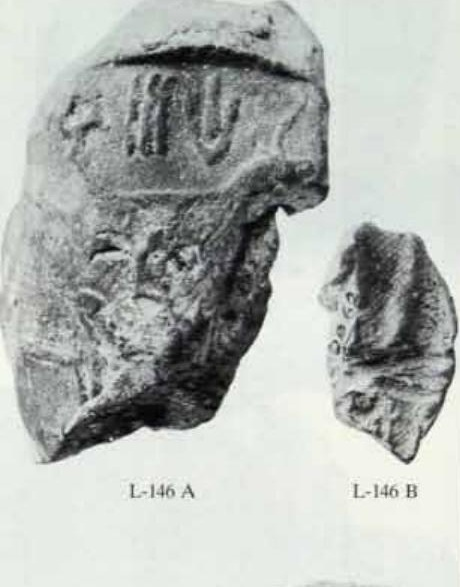
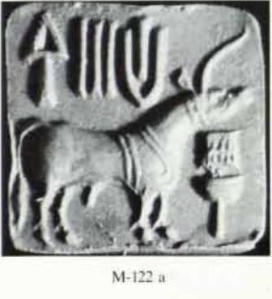
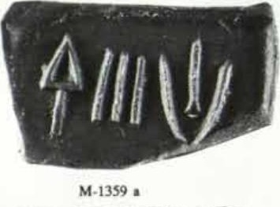
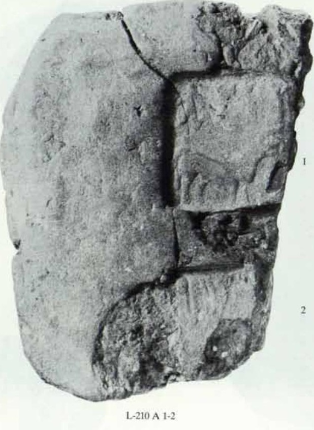
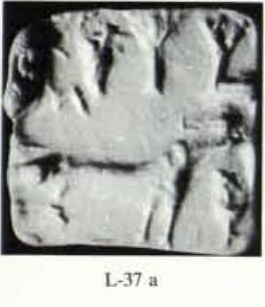
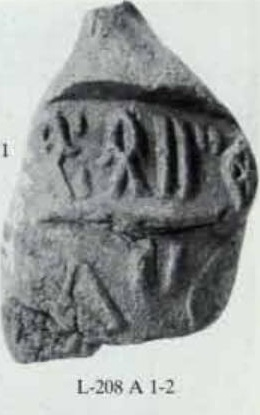
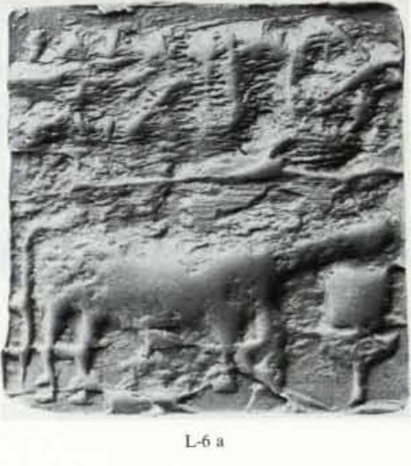

23 November 2026 · source recovery after the prior-work review
The frozen prediction concerns copper tablets with genuinely different complete text families. In 189 first-catalogue and 135 second-catalogue records (overlapping objects), 22 records contain 923: 21 repeat the known family and 1 is incomplete. Eligible new families: 0. The new-event subset has 38 copper and 85 other tablet events, with no 923 in either. These are coverage counts, not failures of the prediction.
Parpola 2008's discussion of figure1 connects the elephant B6 and horned-tiger B12 designs through a shared inscription. This is previously published context, not a fresh holdout: a different picture does not by itself establish a different text family. It also cautions against assuming that a shared inscription simply names the animal.
All 923 copper candidates and exclusions · Event coverage · Other-material discovery records
The old 15 exact-text pairs remain unverified physical matches. Cúper had already rejected the Lothal elephant/M-895 comparison by image. Here three remaining pairs have both sides inspected; two others lack required exact-object photographs. No diagnostic common carving defect was established. The recovered Rupar Rpr-1 images are a different object and are not substituted for the unnumbered candidate.









These physical identifications belong to Parpola and Frenez. They are additions to this continuation's explicit evidence table, not newly discovered matches. The L-6/L-208 source discrepancy remains visible. “Locker,” “single rope” and “undiagnostic” describe supports/fastenings, not what was stored.
| seal | impression | container | context | own_image_check | source_conflict |
|---|---|---|---|---|---|
| L-6 | L-201 | Undiagnostic | warehouse | L-6 available; L-201 photo unavailable; no independent die confirmation here | No direct conflict found for this pair |
| L-6 | L-208 | Single rope | other context | Both photos inspected; worn partial impressions do not independently resolve the die | Frenez 2024 prose describes an indirect L-201/L-208 connection via an undiscovered seal; figure11 still juxtaposes L-6/L-208. Retain unresolved. |
| L-37 | L-210 | Locker | other context | Both photos inspected: corresponding upper impression, partial four-sign line and unicorn; published identification retained, not a new independent geometric verification | No direct conflict found for this pair |
Independent package contents for these links: none recovered. Thus there is no issuer-versus-commodity test result. One seal could identify a person, office, institution, commodity or a combination; container backing alone does not decide among them.
All 15 candidate reviews · Published physical links and context evidence · Photo sources
New here: a frozen eligibility screen; recovery and inspection of actual candidate photographs; explicit publication-to-object links and object-specific context categories omitted from the exact-text shortlist; retention of a source disagreement. Already done by Cúper: broad animal/sign tests, family/copy controls, ordinary-seal animal transfer and the L-161/M-895 photo rejection. Already done in scholarship: Lothal die identifications and cross-container use. These are credited rather than presented as new tests.
The next required observations are a securely identified 923-bearing tablet from a different text family, and independently identified contents for physically matched sealings. We have not recovered either in this search. This bounded search is not a claim that neither exists anywhere.
Sources: Frenez 2020, pp22–23 and tables1–2; Frenez 2024, figure11 and discussion; Parpola 2008, figure1 and discussion. Frozen protocol. Colab units: 0.